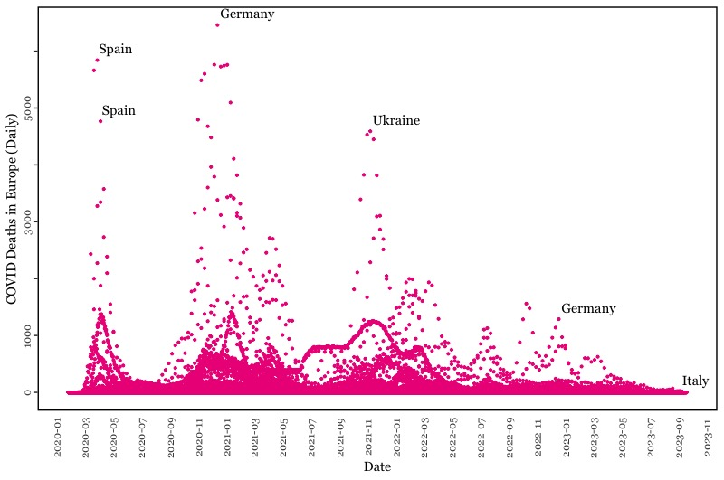

Q1) Anscombe Redux
Call:
lm(formula = y1 ~ x1, data = anscombe)
Residuals:
Min 1Q Median 3Q Max
-1.92127 -0.45577 -0.04136 0.70941 1.83882
Coefficients:
Estimate Std. Error t value Pr(>|t|)
(Intercept) 3.0001 1.1247 2.667 0.02573 *
x1 0.5001 0.1179 4.241 0.00217 **
---
Signif. codes: 0 '***' 0.001 '**' 0.01 '*' 0.05 '.' 0.1 ' ' 1
Residual standard error: 1.237 on 9 degrees of freedom
Multiple R-squared: 0.6665, Adjusted R-squared: 0.6295
F-statistic: 17.99 on 1 and 9 DF, p-value: 0.00217
Call:
lm(formula = y2 ~ x2, data = anscombe)
Residuals:
Min 1Q Median 3Q Max
-1.9009 -0.7609 0.1291 0.9491 1.2691
Coefficients:
Estimate Std. Error t value Pr(>|t|)
(Intercept) 3.001 1.125 2.667 0.02576 *
x2 0.500 0.118 4.239 0.00218 **
---
Signif. codes: 0 '***' 0.001 '**' 0.01 '*' 0.05 '.' 0.1 ' ' 1
Residual standard error: 1.237 on 9 degrees of freedom
Multiple R-squared: 0.6662, Adjusted R-squared: 0.6292
F-statistic: 17.97 on 1 and 9 DF, p-value: 0.002179
lm1 <- lm(y1 ~ x1, data=anscombe)
summary(lm1)
lm2 <- lm(y2 ~ x2, data=anscombe)
summary(lm2)
Q2) Fine Tuning
Show Code
ff <- y ~ x
mods <- setNames(as.list(1:4), paste0("lm", 1:4))
for(i in 1:4) {
ff[2:3] <- lapply(paste0(c("y","x"), i), as.name)
mods[[i]] <- lmi <- lm(ff, data = anscombe)
print(anova(lmi))
}
op <- par(mfrow = c(2, 2), mar = 0.1+c(4,4,1,1), oma = c(0, 0, 2, 0), family = "Georgia")
for(i in 1:4) {
ff[2:3] <- lapply(paste0(c("y","x"), i), as.name)
plot(ff, data = anscombe, col = "deeppink2", pch = "&", bg = "violetred2", cex = 1.2,
xlim = c(3, 19), ylim = c(3, 13))
abline(mods[[i]], col = "maroon2")
}
mtext("Anscombe's 4 Regression data sets", outer = TRUE, cex = 1.5)
Q3) ggplot
Show Code
library(ggplot2)
slope <- coef(lm1)[2]
intercept <- coef(lm1)[1]
ggplot(anscombe, aes(x1,y1))+
geom_point(col="deeppink2", size = 5, pch = "&")+
geom_abline(intercept = intercept, slope = slope, col = "maroon2")+
theme(text = element_text(family = "Georgia"))+
labs(title = "Anscombe Model 1")
Q4) Pre-Hack-a-Thon
It is possible that the labels for the graph will not display properly, if so the output is shown in a drop down below.
Show Code
library(ggplot2)
owidata = read.csv("https://github.com/owid/covid-19-data/blob/master/public/data/owid-covid-data.csv?raw=true")
owidata = owidata[!grepl("^OWID", owidata$iso_code), ]
owideuro = subset(owidata, continent=="Europe")
owideuro[is.na(owideuro)] <- 0
owideuro$date <- as.Date(owideuro$date)
subset <- owideuro[c(20737,59890,59897,64552,32603,21472),]
ggplot(owideuro, aes(date, new_deaths))+
geom_point(col="deeppink2", size=.75) +
geom_text(data = subset,
aes(label = location),
family = "Georgia",
vjust = -.75,
hjust = -.05)+
labs(x="Date",y="COVID Deaths in Europe (Daily)")+
theme(text = element_text(family = "Georgia"),
axis.text.x = element_text(angle = 90),
axis.text.y = element_text(angle = 90, hjust = .5),
axis.ticks.x = element_blank(),
panel.border = element_rect(fill = NA, color = "black", linewidth = 1),
panel.background = element_blank())+
scale_x_date(date_breaks = "2 month",
date_labels = "%Y-%m",
limits = c(as.Date("2020-02-03"),max(owideuro$date))
)+
scale_y_continuous(breaks = seq(0,6000, by = 1000),
labels = c(0,1000,"",3000,"",5000,""))
Correct Graph
